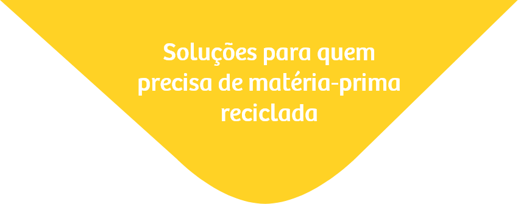
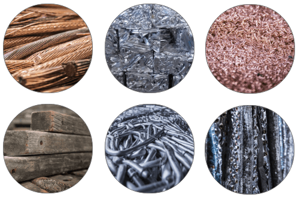
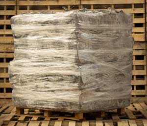
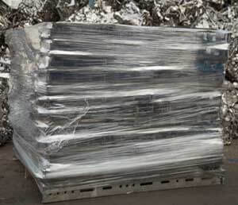
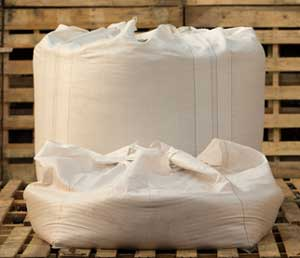
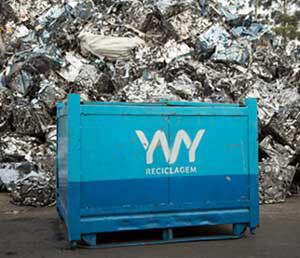

Temos plena consciência dos impactos de um material fora de especificação e fora de prazo em sua linha de produção.
Por isso, desenvolvemos sistemas de captação, triagem, produção, classificação e controle que, combinados com gerenciamento de frota, entregam disponibilidade, pontualidade e flexibilidade no fornecimento de matéria-prima reciclada de qualidade para o seu negócio.
Conheça nosso portifólio de matérias-primas:
Diversidade de materiais reciclados para o abastecimento de sua linha de produção.

-
Aço
-
Alumínio
-
Bronze
-
Chumbo
-
Cobre
-
Ferro
-
Latão
-
Madeira
-
Metais nobres
-
Outros
-
Papel
-
Plástico
-
Vídea

Embalagens customizadas
Acondicionamento e fornecimento de matéria-prima de acordo com a sua demanda:
paletes, big bags, caixas, ad hoc (sob medida).



